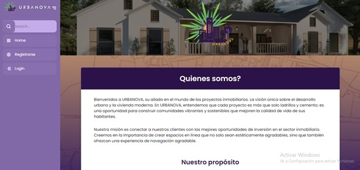

Descripción: Desarrollo de una aplicación de escritorio interactiva con interfaz gráfica (GUI) que simula el funcionamiento de una cuenta financiera personal, permitiendo la gestión de saldo, depósitos, retiros y transferencias entre usuarios con persistencia de datos en archivos binarios (.dat).
Rol desempeñado: Desarrollo de la lógica de negocio, autenticación de usuarios, operaciones CRUD y actualización de saldo.
Resultado obtenido: Aplicación de escritorio funcional, ejecutable de forma portable y con una interfaz reactiva y amigable que supera el uso tradicional de consola.
Sistema Web para Venta y Compra de Proyectos Inmobiliarios
Descripción: Plataforma web orientada a la difusión y comercialización de proyectos inmobiliarios en Bolivia, facilitando la publicación de inmuebles por parte de empresas y PYMES, así como la consulta y guardado de publicaciones por parte de clientes e inversores.
Rol desempeñado: Análisis, diseño e implementación del sistema web bajo metodología en cascada (Waterfall), diseño de base de datos relacional y desarrollo del módulo de publicaciones.
Resultado obtenido: Plataforma accesible e interactiva alojada en servidor de pruebas que optimiza la visibilidad de ofertas inmobiliarias y mejora la interacción cliente-vendedor.
Portafolio Multimedia

Figura 1: Captura de pantalla de la interfaz del proyecto URBANOVA.Audio de presentación personal y resumen profesional:Video demostrativo de la plataforma de banco en C++